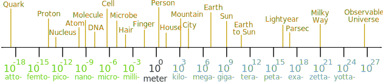

Lengths From Very Small to Very Large
Our Universe has very small things (like atoms), and very large things (like galaxies).
And this is where metric prefixes like milli- and kilo- can be very useful.
Example: the distance between London and New York is about 5,580,000 meters.
But it is easier to use 5,580 kilometers.
Here is an illustration of sizes, from the very small (a Quark) to the very large (the known Universe):

The sizes are in meters using metric numbers.
(Just add the word "meter" after them, so we get "millimeter", "terameter", etc.)
Examples:
A Quark is about a femtometer in size.
Cells are about a micrometer in size (many different sizes though!)
The Milky Way is about a zettameter in size.
The Numbers
The numbers (like 106) use Scientific Notation to show how big the value is.
Example: 106 means to use 10 in a multiplication 6 times:
10 × 10 × 10 × 10 × 10 × 10 = 1,000,000
But in practice it is easier to think "a 1 followed by 6 zeros"
Which is a million.
The prefix is mega-, so a megameter is a million meters.
Example: 109 is a 1 followed by 9 zeros: 1,000,000,000 (a billion).
The prefix is giga-, so a gigameter is a billion meters.
Example: 10-9 is a 1 moved nine places the other side of the decimal: 0.000 000 001
It is also called a billionth.
The prefix is nano-, so a nanometer is a billionth of a meter.
Looking at the illustration we can see that a person is about 1 meter in size, a mountain is about 103 (one thousand) meters in size, and the diameter of the Sun is about 109 (one billion) meters.
Example: We could also say the Sun is about a "gigameter" in size
It's diameter is actually 1.392×109 meters, or 1.392 gigameters, or simply 1.392 Gm
Some Interesting Facts:
- The smallest length with any meaning is the Planck length (about 1.6 x 10-35 meter)
- Quarks are very very small (less than 10-19 meters)
- A Hydrogen atom is about 100 picometers in diameter (1.06 x 10-10 meters)
- Molecules are around the billionths of a meter in size. That is 0.000000001 meters. Some molecules are smaller and some bigger, though.
- A DNA molecule has a width of about 2.5 nanometers (but unfolded is about 2 meters!)
- A skin cell is about 30 micrometers across (0.000 030 m)
- People are a little over a meter tall (1.7 m is typical for men)
- Mountains are kilometers in size (Mount Everest is 8,848 m high)
- The Earth is megameters in size (a megameter is a thousand kilometers, and the Earth's diameter is 12,742 km)
- The Sun's diameter is about a gigameter (actually 1.39 x 109 meters)
- A Light Year is about 10 petameters in size (a petameter is 1,000,000,000,000,000 meters, which is a 1 followed by 15 zeros, or 1015)
- The Milky Way is about 1 zettameter across (1,000,000,000,000,000,000,000 meters, which is a 1 followed by 21 zeros, or 1021)
- The Universe is very very big